Time settings, rates, Connect AI, API key, delete account, and the About features. 5 in use. Rendered from Storybook on the app background (#f4f4f4). Generated by tools/build-canvases.js; do not edit by hand.
The five feature tabs (`Profile and About.dc.html` § AP/AT/AD).
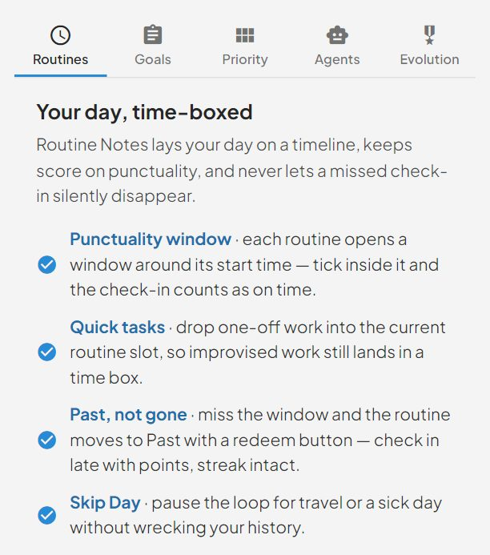
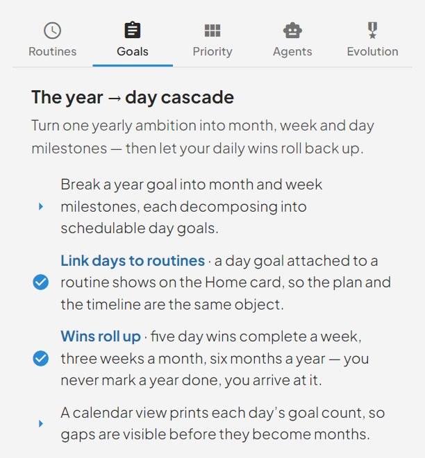
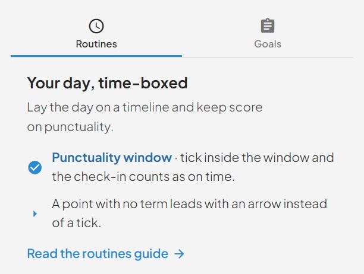
The legacy API key (`Profile and About.dc.html` § PP/PT/PD).
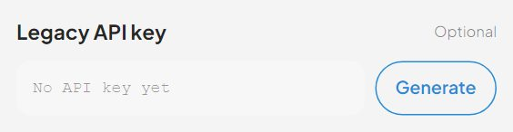
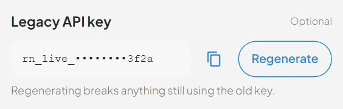
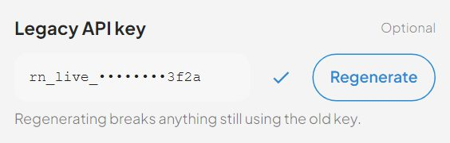
Connect AI — the MCP credentials and the four setup guides (`Profile and About.dc.html` § PP/PT/PD).
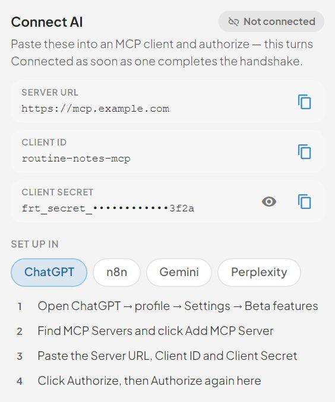
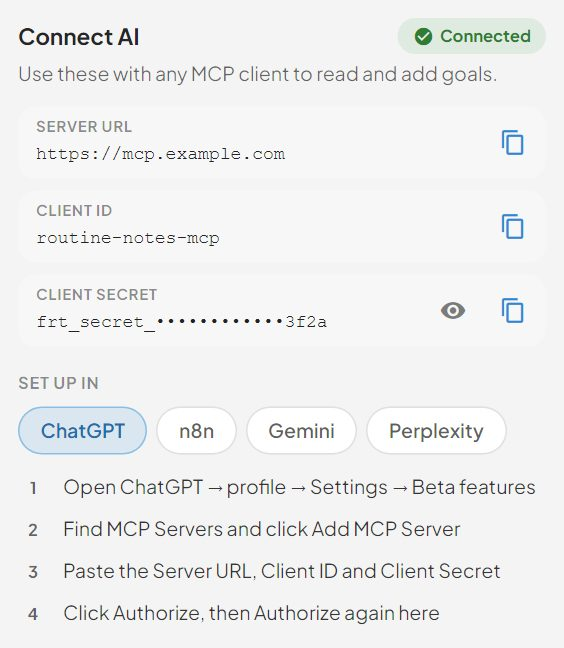
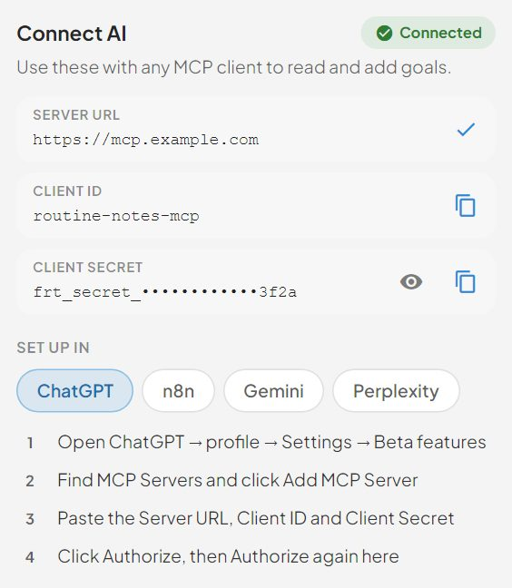
Exact match after a trim — `delete`, `Delete` and `DELETE now` all fail.
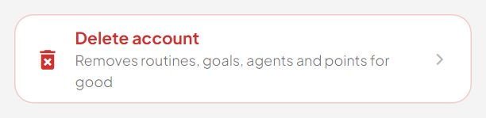
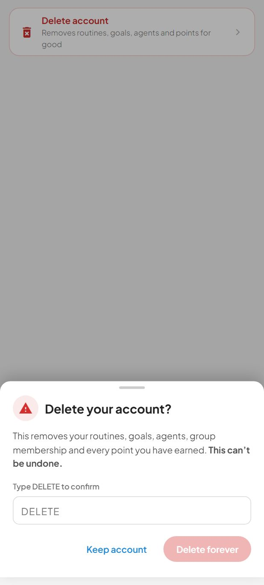
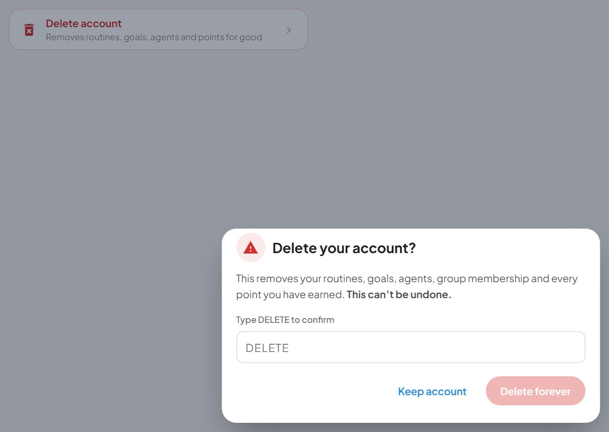
Profile's TIME card: the two settings a user can actually change, plus the one that is fixed (`Profile and About.dc.html` § PP/PT/PD).
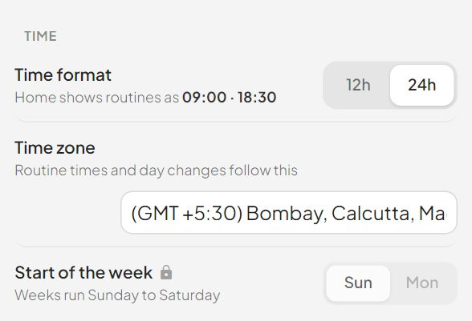
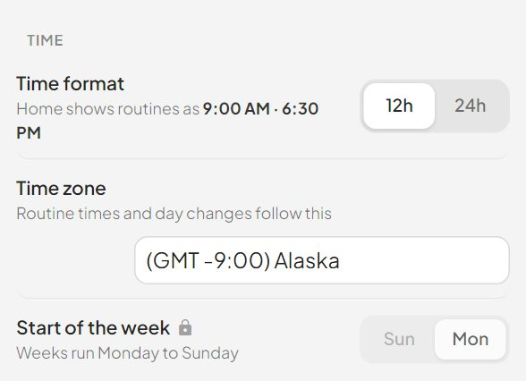